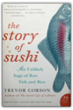
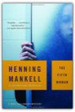
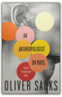
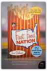

|
A Walk in the Woods: Rediscovering America on the Appalachian Trail

A Walk in the Woods showcases Bryson at the height of his comic powers. Meeting up with characters such as Beulah and her fearsome husband, "Bubba T. Flubba," readers risk snakebite and hantavirus to trudge through swollen rivers, traipse up mountainsteps, and develop a new reverence for cream sodas and hot showers. But Bryson also uses his acute powers of observation to conjure a poignant backdrop of silent forests and sparkling lakes, thereby making a gentle but unforgettable plea for the ecological treasures we are in danger of losing. Fresh, illuminating, and uproariously funny, A Walk in the Woods is travel writing at its very best. Blood River: A Journey to Africa's Broken Heart

The Story of Sushi: An Unlikely Saga of Raw Fish and Rice

Trevor Corson
Everything you never knew about sushi—its surprising origins, the colorful lives of its chefs, and the bizarre behavior of the creatures that compose itTrevor Corson takes us behind the scenes at America's first sushi-chef training academy, as eager novices strive to master the elusive art of cooking without cooking. He delves into the biology and natural history of the edible creatures of the sea, and tells the fascinating story of an Indo-Chinese meal reinvented in nineteenth-century Tokyo as a cheap fast food. He reveals the pioneers who brought sushi to the United States and explores how this unlikely meal is exploding into the American heartland just as the long-term future of sushi may be unraveling. The Story of Sushi is at once a compelling tale of human determination and a delectable smorgasbord of surprising food science, intrepid reporting, and provocative cultural history. See Delphi and Die: A Marcus Didius Falco Mystery

Guns, Germs, and Steel: The Fates of Human Societies

Until around 11,000 b.c., all peoples were still Stone Age hunter/gatherers. At that point, a great divide occurred in the rates that human societies evolved. In Eurasia, parts of the Americas, and Africa, farming became the prevailing mode of existence when indigenous wild plants and animals were domesticated by prehistoric planters and herders. As Jared Diamond vividly reveals, the very people who gained a head start in producing food would collide with preliterate cultures, shaping the modern world through conquest, displacement, and genocide. The paths that lead from scattered centers of food to broad bands of settlement had a great deal to do with climate and geography. But how did differences in societies arise? Why weren't native Australians, Americans, or Africans the ones to colonize Europe? Diamond dismantles pernicious racial theories tracing societal differences to biological differences. He assembles convincing evidence linking germs to domestication of animals, germs that Eurasians then spread in epidemic proportions in their voyages of discovery. In its sweep, Guns, Germs and Steel encompasses the rise of agriculture, technology, writing, government, and religion, providing a unifying theory of human history as intriguing as the histories of dinosaurs and glaciers. Jared Diamond, professor of physiology at the UCLA Medical School, is the author of The Third Chimpanzee, awarded the 1992 Los Angeles Times Science Book Award. He is a regular contributor to Natural History and Discover magazines and lives in Los Angeles. The Bookwoman's Last Fling

When wealthy horse trainer H. R. Geiger dies, Denver bookman Cliff Janeway encounters the legacy of the man's wife, Candice, a true bookwoman who left behind an assortment of rare first-edition children's books. Sent to assess the collection, Janeway soon finds that several titles are missing, replaced by cheap reprints — while other hugely expensive pieces remain. Why would a thief take one priceless book and leave an equally valuable volume on the shelf? Suspecting foul play, Janeway follows the trail of Candice's shadowy past to California's Golden Gate and Santa Anita racetracks, where he signs on as a racehorse hot walker. Eavesdropping on the chatter among the hands, he doesn't like what he hears. And when he goes to the house where Candice died to look for answers, Janeway finds much more than he bargained for. The Smoke Jumper

She has brought them here by court order on a youth program to help them find themselves. But one among them will be lost forever. For soon the cocoon of fire will hatch to engulf the entire mountain and exact its deadly toll. And into this inferno will come ... The Smoke Jumper. His name is Connor Ford and he falls like an angel of mercy from the sky, braving the flames to save the woman he loves but knows he cannot have. For Julia Bishop is the partner of his closest friend, Ed Tully, an ambitious young musician. Julia loves them both but the tragedy on Snake Mountain forces her to choose between them and burns a brand on all their hearts. With his blond, blue-eyed looks and laconic cowboy charm, Connor is the only child of a Montana rancher and a rodeo queen. Until that fateful day, he has been happy to spend his winters nurturing a career as a photographer and his summer vacations with Ed, “smoke jumping” — being dropped by parachute to fight remote forest fires. In the wake of the fire, he embarks on a journey to the dark heart of human suffering, traveling the world’s worst wars and disasters to take photographs that find him fame but never happiness. Reckless of a life he no longer wants, again and again he dares death to take him, until another fateful day on another continent, he must walk through fire once more.... After his two international bestsellers, The Horse Whisperer and The Loop, Nicholas Evans returns with an epic novel of love and loyalty, of guilt and honor. Moving from the towering wilds of the American West to the killing fields of Africa, The Smoke Jumper is the story of three people’s quest for happiness and self-fulfillment, played out against the heroism of fire fighting in the wilderness and photojournalism at the edge of human experience — a mesmerizing adventure for the spirit, told in the grandest tradition. Arctic Chill: An Inspector Erlendur Novel

On an icy January day, the Reykjavik police are called to a block of apartments where a body has been found in the garden: a young, dark-skinned boy is frozen to the ground in a pool of blood. Erlendur and his team embark on their investigation and soon unearth tensions simmering beneath the surface of Iceland’s outwardly liberal, multicultural society. Meanwhile, the boy’s murder forces Erlendur to confront the tragedy in his own past. Master crime writer Arnaldur Indridason's Arctic Chill renders a vivid portrait of Iceland's brutal, little-known culture wars in a taut, fast-paced police procedural. Animal, Vegetable, Miracle: A Year of Food Life

"As the U.S. population made an unprecedented mad dash for the Sun Belt, one carload of us paddled against the tide, heading for the Promised Land where water falls from the sky and green stuff grows all around. We were about to begin the adventure of realigning our lives with our food chain. "Naturally, our first stop was to buy junk food and fossil fuel. . . ." Hang on for the ride: With characteristic poetry and pluck, Barbara Kingsolver and her family sweep readers along on their journey away from the industrial-food pipeline to a rural life in which they vow to buy only food raised in their own neighborhood, grow it themselves, or learn to live without it. Their good-humored search yields surprising discoveries about turkey sex life and overly zealous zucchini plants, en route to a food culture that's better for the neighborhood and also better on the table. Part memoir, part journalistic investigation, Animal, Vegetable, Miracle makes a passionate case for putting the kitchen back at the center of family life and diversified farms at the center of the American diet. "This is the story of a year in which we made every attempt to feed ourselves animals and vegetables whose provenance we really knew . . . and of how our family was changed by our first year of deliberately eating food produced from the same place where we worked, went to school, loved our neighbors, drank the water, and breathed the air." The Dance of Intimacy

This Is Your Brain on Music: The Science of a Human Obsession

In this groundbreaking union of art and science, rocker-turned-neuroscientist Daniel J. Levitin (The World in Six Songs) explores the connection between music, its performance, its composition, how we listen to it, why we enjoy it, and the human brain. Drawing on the latest research and on musical examples ranging from Mozart to Duke Ellington to Van Halen, Levitin reveals: How composers produce some of the most pleasurable effects of listening to music by exploiting the way our brains make sense of the worldWhy we are so emotionally attached to the music we listened to as teenagers, whether it was Fleetwood Mac, U2, or Dr. DreThat practice, rather than talent, is the driving force behind musical expertiseHow those insidious little jingles (called earworms) get stuck in our headTaking on prominent thinkers who argue that music is nothing more than an evolutionary accident, Levitin poses that music is fundamental to our species, perhaps even more so than language. A Los Angeles Times Book Award finalist, This Is Your Brain on Music will attract readers of Oliver Sacks, as it is an unprecedented, eye-opening investigation into an obsession at the heart of human nature. Moneyball: The Art of Winning an Unfair Game

"I wrote this book because I fell in love with a story. The story concerned a small group of undervalued professional baseball players and executives, many of whom had been rejected as unfit for the big leagues, who had turned themselves into one of the most successful franchises in Major League Baseball. But the idea for the book came well before I had good reason to write it—before I had a story to fall in love with. It began, really, with an innocent question: how did one of the poorest teams in baseball, the Oakland Athletics, win so many games?" With these words Michael Lewis launches us into the funniest, smartest, and most contrarian book since, well, since Liar's Poker. Moneyball is a quest for something as elusive as the Holy Grail, something that money apparently can't buy: the secret of success in baseball. The logical places to look would be the front offices of major league teams, and the dugouts, perhaps even in the minds of the players themselves. Lewis mines all these possibilities—his intimate and original portraits of big league ballplayers are alone worth the price of admission—but the real jackpot is a cache of numbers—numbers!—collected over the years by a strange brotherhood of amateur baseball enthusiasts: software engineers, statisticians, Wall Street analysts, lawyers and physics professors. What these geek numbers show—no, prove—is that the traditional yardsticks of success for players and teams are fatally flawed. Even the box score misleads us by ignoring the crucial importance of the humble base-on-balls. This information has been around for years, and nobody inside Major League Baseball paid it any mind. And then came Billy Beane, General Manager of the Oakland Athletics. Billy paid attention to those numbers —with the second lowest payroll in baseball at his disposal he had to—and this book records his astonishing experiment in finding and fielding a team that nobody else wanted. Moneyball is a roller coaster ride: before the 2002 season opens, Oakland must relinquish its three most prominent (and expensive) players, is written off by just about everyone, and then comes roaring back to challenge the American League record for consecutive wins. In a narrative full of fabulous characters and brilliant excursions into the unexpected, Michael Lewis shows us how and why the new baseball knowledge works. He also sets up a sly and hilarious morality tale: Big Money, like Goliath, is always supposed to win...how can we not cheer for David? "One of the best baseball—and management—books out....Deserves a place in the Baseball Hall of Fame."—Forbes The Fifth Woman

Henning Mankell
Fifth in the Kurt Wallander series.In an African convent, four nuns and a unidentified fifth woman are brutally murdered—the death of the unknown woman covered up by the local police. A year later in Sweden, Inspector Kurt Wallander is baffled and appalled by two murders. Holger Eriksson, a retired car dealer and bird watcher, is impaled on sharpened bamboo poles in a ditch behind his secluded home, and the body of a missing florist is discovered—strangled and tied to a tree. The only clues Wallander has to go on are a skull, a diary, and a photo of three men. What ensues is a case that will test Wallander’s strength and patience, because in order to discover the reason behind these murders, he will also need to uncover the elusive connection between these deaths and the earlier unsolved murder in Africa of the fifth woman. Faceless Killers

Feeding the Monster: How Money, Smarts, and Nerve Took a Team to the Top

Feeding the Monster shows what it takes to win a championship, both on and off the field. Seth Mnookin spent mornings in the front office, afternoons in the clubhouse, and evenings in the owners' box. He learned how the Sox persuaded Curt Schilling to sign, why Nomar Garciaparra resented his teammates, and what led to Pedro Martinez's acrimonious exit. He knows the real story behind Theo Epstein's brief departure and witnessed the development of his rift with Larry Lucchino. And in a new epilogue, Mnookin examines the 2006 offseason, including the negotiations for Japanese phenom Daisuke Matsuzaka. In a juicy narrative that is filled with thrilling detail, Feeding the Monster peels back the curtain to show what it means to be a part of a major league sports team today. An Anthropologist On Mars: Seven Paradoxical Tales

Oliver Sacks
To these seven narratives of neurological disorder Dr. Sacks brings the same humanity, poetic observation, and infectious sense of wonder that are apparent in his bestsellers Awakenings and The Man Who Mistook His Wife for a Hat. These men, women, and one extraordinary child emerge as brilliantly adaptive personalities, whose conditions have not so much debilitated them as ushered them into another reality.
The Complete Persepolis

Persepolis is the story of Satrapi's unforgettable childhood and coming of age within a large and loving family in Tehran during the Islamic Revolution; of the contradictions between private life and public life in a country plagued by political upheaval; of her high school years in Vienna facing the trials of adolescence far from her family; of her homecoming—both sweet and terrible; and, finally, of her self-imposed exile from her beloved homeland. It is the chronicle of a girlhood and adolescence at once outrageous and familiar, a young life entwined with the history of her country yet filled with the universal trials and joys of growing up. Edgy, searingly observant, and candid, often heartbreaking but threaded throughout with raw humor and hard-earned wisdom—Persepolis is a stunning work from one of the most highly regarded, singularly talented graphic artists at work today. Fast Food Nation: The Dark Side of the All-American Meal

Eric Schlosser
Fast food has hastened the malling of our landscape, widened the chasm between rich and poor, fueled an epidemic of obesity, and propelled American cultural imperialism abroad. That's a lengthy list of charges, but Eric Schlosser makes them stick with an artful mix of first-rate reportage, wry wit, and careful reasoning.Schlosser's myth-shattering survey stretches from California's subdivisions, where the business was born, to the industrial corridor along the New Jersey Turnpike, where many of fast food's flavors are concocted. Along the way, he unearths a trove of fascinating, unsettling truths — from the unholy alliance between fast food and Hollywood to the seismic changes the industry has wrought in food production, popular culture, and even real estate. The Way We Eat: Why Our Food Choices Matter

Five Principles for Making Conscientious Food Choices 1. Transparency: We have the right to know how our food is produced. 2. Fairness: Producing food should not impose costs on others. 3. Humanity: Inflicting unnecessary suffering on animals is wrong. 4. Social Responsibility: Workers are entitled to decent wages and working conditions. 5. Needs: Preserving life and health justifies more than other desires. Peter Singer, the groundbreaking ethicist who "may be the most controversial philosopher alive" (The New Yorker), now sets his critical sights on the food we buy and eat: where it comes from, how it's produced, and whether it was raised humanely. Teaming up once again with attorney Jim Mason, his coauthor on the acclaimed Animal Factories, Singer explores the impact our food choices have on humans, animals, and the environment. In The Way We Eat, Singer and Mason examine the eating habits of three American families with very different diets. They track down the sources of each family's food to probe the ethical issues involved in its production and marketing. What kinds of meat are most humane to eat? Is "organic" always better? Wild fish or farmed? Recognizing that not all of us will become vegetarians, Singer and Mason offer ways to make the best food choices. As they point out: "You can be ethical without being fanatical." The Protest Singer: An Intimate Portrait of Pete Seeger
We see Seeger instilled with a love of music by his parents, both classically trained musicians; as a teenager, hearing real folk music for the first time; and as a young man, singing with Woody Guthrie and with the Weavers. We learn of his harassment by the government for his political beliefs and his testimony before the House Un-American Activities Committee in 1949. And we follow his engagement with civil rights, the peace movement, and the environment—especially his work saving the Hudson River and building the ship Clearwater. He talks ardently about his own music and that of others, and about the power of music to connect people and bind them to a cause. Finally, we meet Toshi, his wife of nearly sixty years, and members of his family, at the house he built on a mountainside in upstate New York. The Protest Singer is as spirited and captivating as its subject—an American icon, celebrating his ninetieth birthday. Heads in the Sand: How the Republicans Screw Up Foreign Policy and Foreign Policy Screws Up the Democrats

"A very serious, thoughtful argument that has never been made in such detail or with such care." —Ezra Klein, staff writer at The American Prospect "Matt Yglesias is one of the smartest voices in the blogosphere. He knows a lot about politics, a lot about foreign policy, and, crucially, is unusually shrewd in understanding how they interact. Here's hoping that his new book will introduce him to an even wider audience. Once you discover him, you'll be hooked." —E. J. Dionne, author of Souled Out: Reclaiming Faith and Politics After the Religious Right and Why Americans Hate Politics "Matthew Yglesias is one of a handful of bloggers that I make a point of reading every day. Heads in the Sand is a smart, vital book that urges Democrats to stop evading the foreign-policy debate and to embrace the old principles of international liberalism—to be right and also to win." —Fred Kaplan, author of Daydream Believers: How a Few Grand Ideas Wrecked American Power "Reading foreign policy tomes is seldom included among life's pleasures, but Yglesias has concocted a startling exception. Heads in the Sand is not just a razor-sharp analysis cum narrative of the politics of national security in general and the Iraq war in particular, it's also an enthralling and often very funny piece of writing. Though he administers strong antidotes to the haplessness of his fellow Democrats and liberals, there's more than a spoonful of sugar to help the medicine go down." —Hendrik Hertzberg, Senior Editor, The New Yorker, and author of Politics: Observations and Arguments Fast-rising political commentator Matthew Yglesias reveals the wrong-headed foreign policy stance of conservatives, neocons, and the Republican Party for what it is—aggressive nationalism. Writing with wit, passion, and keen insight, Yglesias reminds us of the rich tradition of liberal internationalism that, developed by Democrats, was used with great success by both Democratic and Republican administrations for more than fifty years. He provides a starting point for politicians, policymakers, pundits, and citizens alike to return America to its role as leader of a peace-loving and cooperative international community. The Future of the Internet—And How to Stop It

IPods, iPhones, Xboxes, and TiVos represent the first wave of Internet-centered products that can’t be easily modified by anyone except their vendors or selected partners. These tethered appliances” have already been used in remarkable but little-known ways: car GPS systems have been reconfigured at the demand of law enforcement to eavesdrop on the occupants at all times, and digital video recorders have been ordered to self-destruct thanks to a lawsuit against the manufacturer thousands of miles away. New Web 2.0 platforms like Google mash-ups and Facebook are rightly toutedbut their applications can be similarly monitored and eliminated from a central source. As tethered appliances and applications eclipse the PC, the very nature of the Internetits generativity,” or innovative characteris at risk. The Internet’s current trajectory is one of lost opportunity. Its salvation, Zittrain argues, lies in the hands of its millions of users. Drawing on generative technologies like Wikipedia that have so far survived their own successes, this book shows how to develop new technologies and social structures that allow users to work creatively and collaboratively, participate in solutions, and become true netizens.” Taking On the System: Rules for Radical Change in a Digital Era
The Sixties are over and the rules of power have been transformed. In order to change the world one needs to know how to manipulate the media, not just march in the streets. Markos Moulitsas Zuniga, otherwise known as "Kos," is today's symbol of digital activism, giving a voice to everyday people. In Taking on the System, Kos has taken a cue from his revolutionary predecessor's doctrine, Saul Alinksy's Alinsky's Rules for Radicals, and places this epic hand-book in today's digital era, empowering every American to make a difference in the 21st century. As founder of the largest political blog in the nation, Kos knows how it's done, because he's done it with tremendous success. In Taking on the System, he shares practical guidelines on how grassroots movements can thrive in the age of global information, while referencing historical and present examples of the tragedy caused without those actions. The walls between the people and the power the so-called rabble and the so-called elite are being torn down by technology, and a new army of amateurs are storming the barriers to effect political, cultural, and environmental transformation. Readers will come to understand how they too can change the world. |


My Library
Collection Total:
545 Items
545 Items
Last Updated:
Apr 7, 2013
Apr 7, 2013
 Made with Delicious Library
Made with Delicious Library